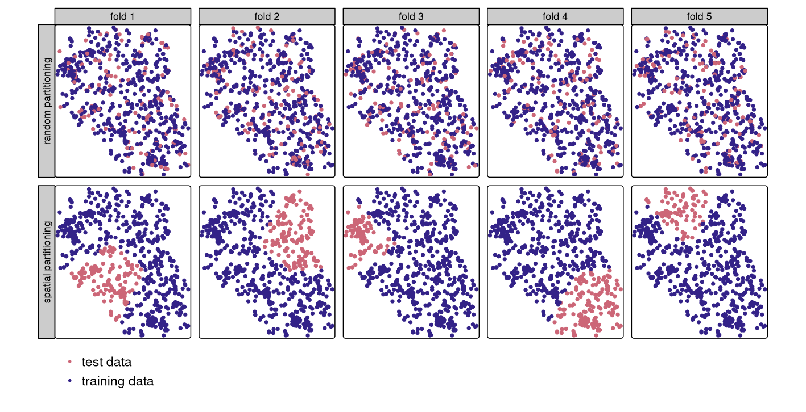
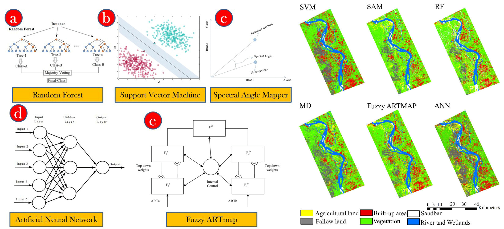

7 Week 7 Classification II
7.1 Summary
This week’s lecture advanced our understanding of Classification, delving into two specialized remote sensing image analysis techniques: Object-Based Image Analysis (OBIA) and Sub Pixel Analysis. OBIA aggregates neighbouring pixels that share similar characteristics into objects for more cohesive analysis, whereas Sub Pixel Analysis intricately resolves mixed pixels situations, where a single pixel encompasses multiple land surface types.
Evaluating the accuracy of outcomes is paramount. The Confusion Matrix is instrumental in assessing classification models’ performance, facilitating the calculation of key metrics such as Producer’s Accuracy, User’s Accuracy, and Overall Accuracy. Moreover, it enables the derivation of the Kappa Coefficient, offering a comparative measure of the image’s accuracy against chance coincidences. The culmination of the lecture underscored the importance of validation, spotlighting strategies like training and testing data splits and cross-validation techniques. The lecture integrated the concept of spatial autocorrelation, as previously introduced in CASA0005, heralding the adoption of Spatial Cross Validation. This approach considers the influence of spatial factors and strives to reduce spatial autocorrelation between the training and testing datasets, thereby enhancing the reliability of model assessments.

7.2 Applications
Last week we explored classification, and this week’s literature focuses on the assessment of accuracy and the precision comparison of various methods. Rwanga, Ndambuki, et al. (2017) employed non-parametric rules for supervised classification to categorise and map land use/land cover in the study area. They conducted an accuracy assessment, and their kappa coefficient was 0.722, which is rated as substantial, affirming that this classified image is suitable for further research. Their study is an excellent example of conducting an accuracy assessment.
Talukdar et al. (2020) investigated the accuracy of different Land Use / Land Cover (LULC) mapping algorithms, thereby identifying the best classifiers for Earth Observation (EO) further. They studied six machine learning algorithms, including the well-known Support Vector Machine (SVM), Random Forest (RF), and Artificial Neural Networks (ANN). Their results indicated that the RF algorithm is the best LULC classifier among these six algorithms.

7.3 Reflection
My vision from the first week to gain a more comprehensive understanding of the integration of remote sensing and machine learning was realised in weeks six and seven. Although the content this week was relatively more technical and theory-heavy, it was overall quite fascinating. The lecture’s final review of spatial autocorrelation made me realise that we’re not just studying machine learning; we’re exploring spatial science.
This week focused on discussing the assessment of model accuracy, but I usually like to link accuracy with computational time (in the mathematics, when discussing model performance, it’s common to discuss the model’s accuracy in conjunction with computational time). I know dwelling on computational complexity might be considered excessive, as this term is somewhat beyond our scope and more closely associated with mathematical optimisation.
However, this perspective is indeed worth considering, especially since processing large images can be computationally intensive. In situations with time constraints, such as projects aimed at preventing and mitigating disasters, time is money, and the priority of computational complexity rises. Here, I found an excellent piece of literature that accelerates computation without sacrificing accuracy. Csillik (2017) offers an optimisation method for the time-consuming process of extracting information from large images using OBIA, implementing a low-level grouping process. Their main contribution is a significant reduction in computation time, from 5 hours and 35 minutes to just 13 minutes, while maintaining similar or even slightly improved geometric accuracy.